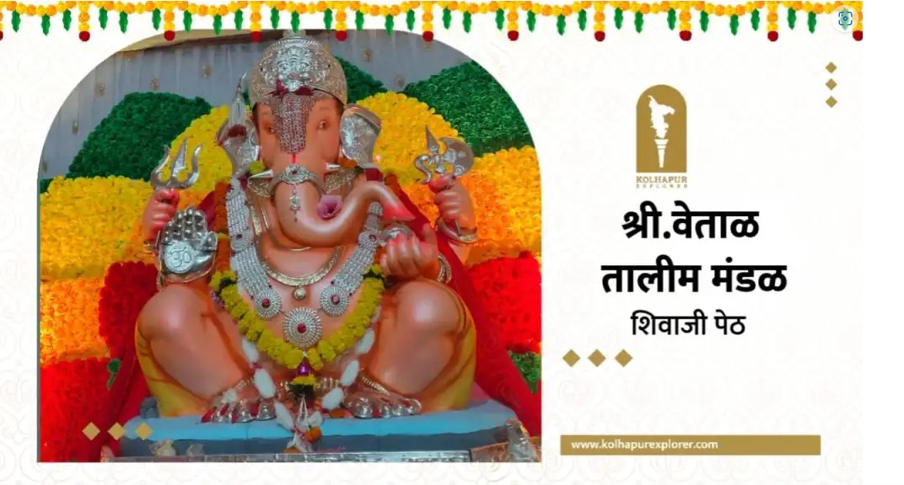

Welcome to our Talim & Mandal page!श्री. वेताळ तालीम मंडळ शिवाजी पेठ
स्थापना - १८६७ रजिस्टर नं - अध्यक्ष - कोल्हापुरातील अनेक मंडळे हि स्वातंत्र्य च्या अधिपासुनची आहेत. शिवाजी पेठेमध्ये श्री वेताळ व श्री नृसिंह देवाचे तांदळे आहेत. मोठ्या उत्सवात येथील पालखी सोहळा साजरा होतो. या देवतेच्या नावावरून येथील तालमीला नाव देण्यात आले. शिवाजी पेठेचा महाराजा म्हणून या मंडळाला ओळखले जाते.या तालमीचे वैशिष्ट्ये म्हणजे कोल्हापुर पहिल्यांदा मंडळाच गाण काढणारी व सर्वात मोठी डॉल्बी सिस्टम लावणारी पहिली तालीम म्हणून ओळख आहे. स्वर्गीय रामभाऊ चव्हाण दादा यांनी अनेक वर्ष तालमीचे अध्यक्ष पद भूषवले.
Vetal Talim Mandal